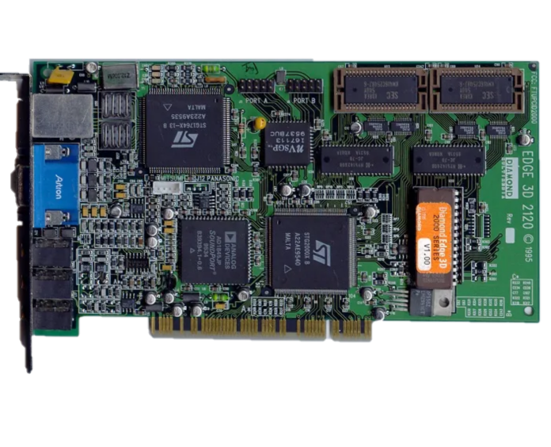
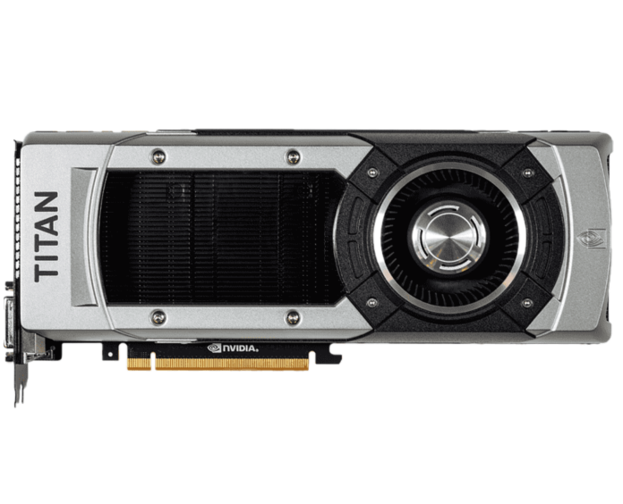

Začátky 80.léta 90.léta Přítomnost Začátky Historie grafických karet sahá až do 70. let 20. století, kdy začala éra osobních počítačů. První grafické karty byly jednoduché zařízení nazvané videoadaptéry, které byly schopné generovat jednoduché textové a grafické zobrazení na monitoru. Tyto karty používaly paměť pro ukládání znaků a barev a byly ovládány prostřednictvím příkazů z operačního systému. 80. léta S rozvojem počítačových her a náročnějších grafických aplikací se začaly vyvíjet pokročilejší grafické karty. V 80. letech se objevily první karty s grafickými procesory (GPU), které měly schopnost zpracovávat a vykreslovat složitější grafiku a 2D obrázky. Tyto karty využívaly speciální grafické akcelerátory, které snižovaly zátěž procesoru tím, že se staraly o výpočet grafických operací. Obrázek CGA(Color Graphics Adapter)  Obrázek První Nvidia grafiky (Nvidia NV1) 90. léta S příchodem 90. let a nástupem 3D grafiky se grafické karty začaly stávat nezbytným prvkem pro herní průmysl. Firmy jako NVIDIA a ATI (dnes součást AMD) představily první 3D akcelerátory, které umožňovaly výpočet a vykreslování 3D objektů a efektů v reálném čase. Tyto karty využívaly speciální algoritmy, jako je texturování, stínování a zobrazení wireframe modelů, aby dosáhly plynulého a realistického zobrazení. Přítomnost V průběhu dalších let se grafické karty stále zdokonalovaly a získávaly vyšší výpočetní výkon. Byly přidávány nové funkce, jako je hardwarová podpora pro video dekódování, rozšířená podpora pro více monitorů, vykreslování ve vysokém rozlišení a podpora pokročilých grafických technik, včetně ray tracingu. S nástupem virtuální reality se objevily také speciální VR-ready grafické karty, které umožňují plynulé a realistické zobrazení ve virtuálním prostředí. Dnes jsou grafické karty důležitým prvkem pro počítačové hry, profesionální grafické a designové aplikace, vědecký výzkum a další náročné úlohy.  Obrázek Moderní grafická karta (Nvidia TITAN)